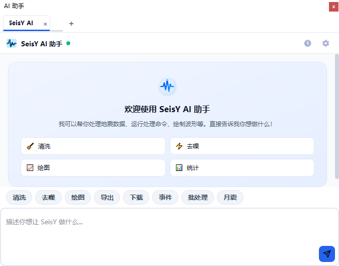
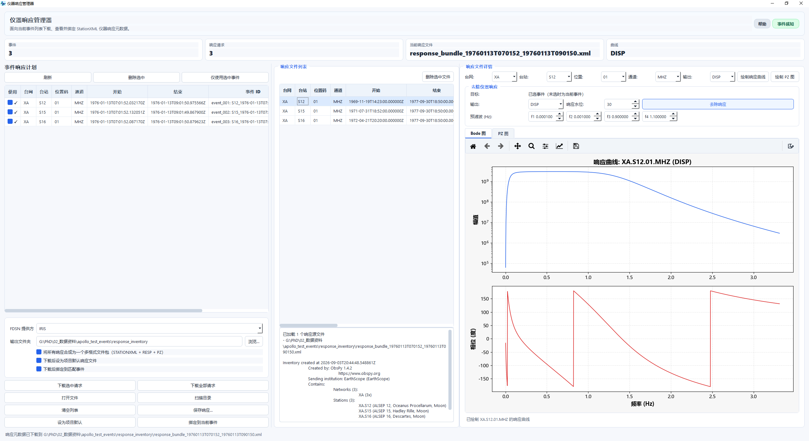
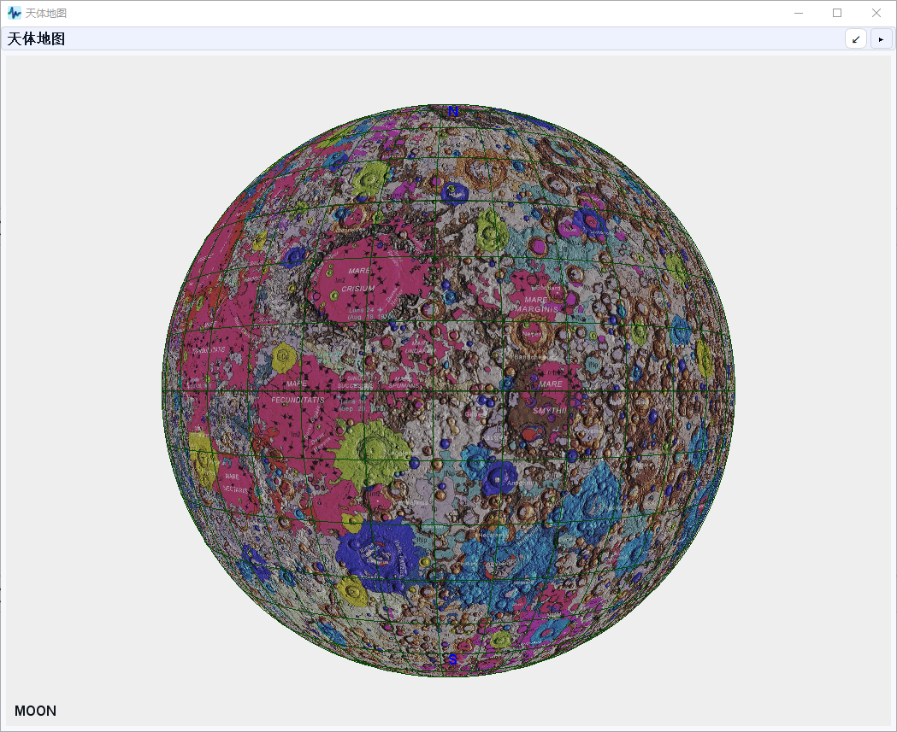
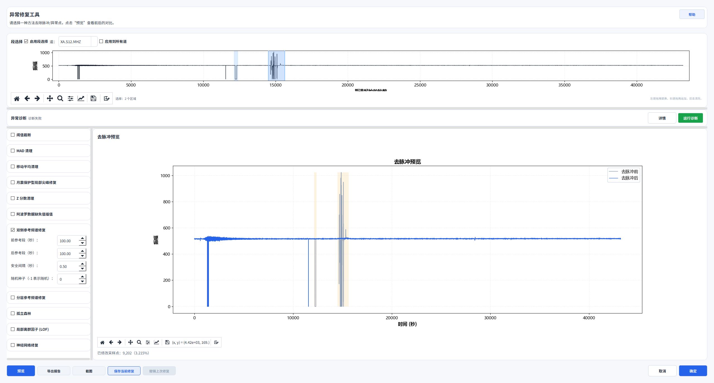
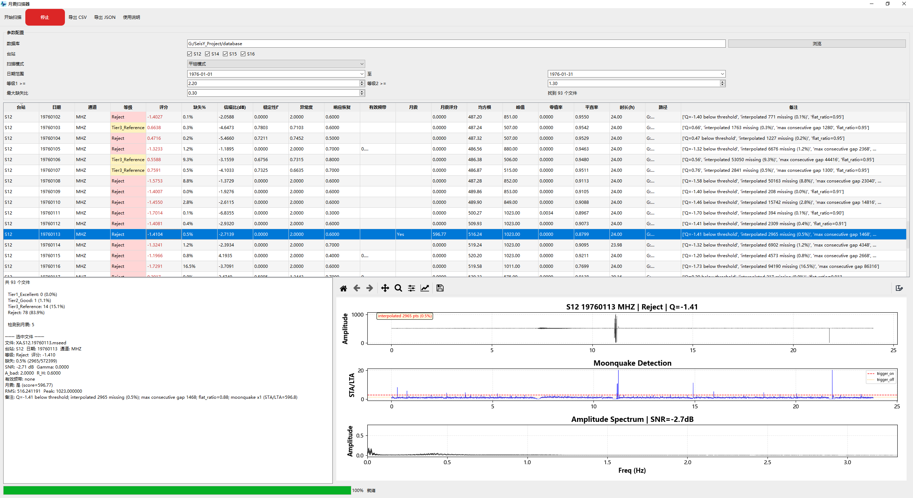
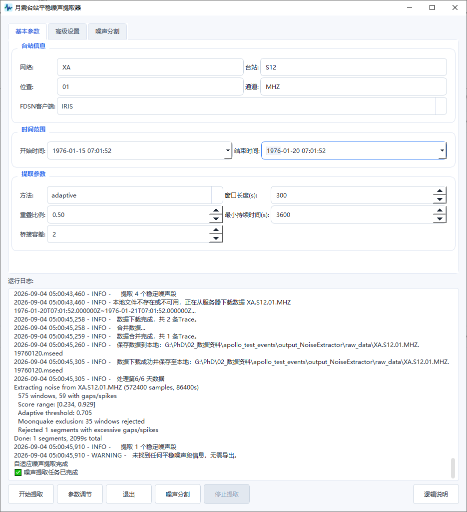
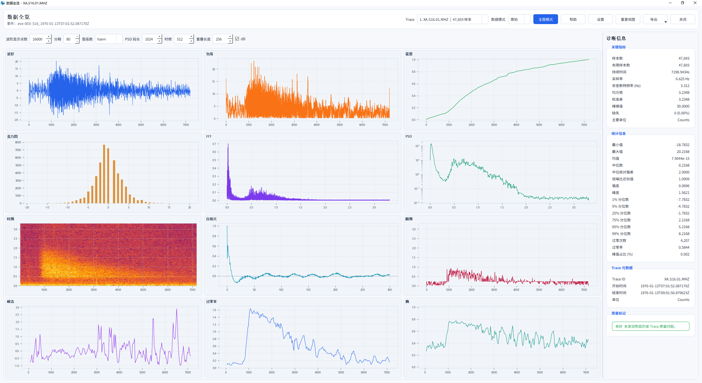
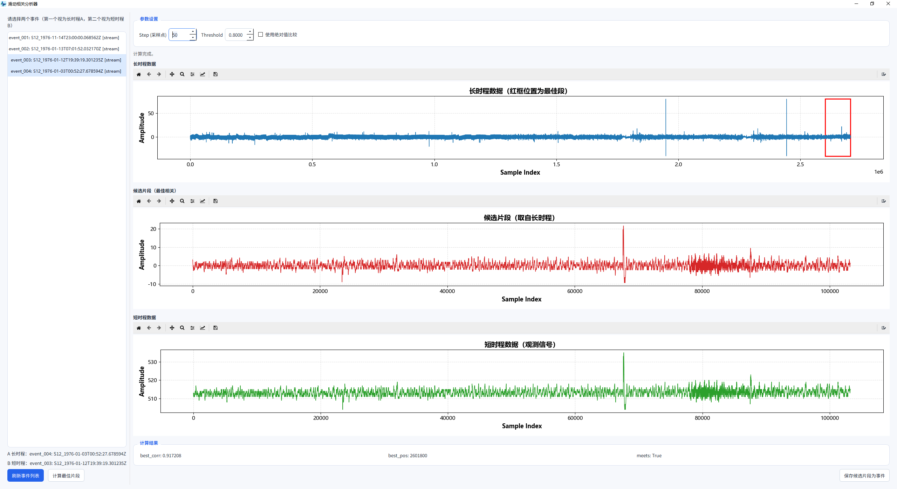
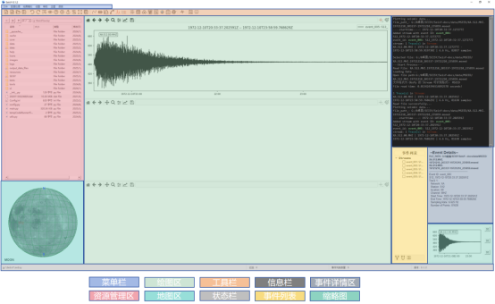

SeisY
地震数据处理与分析平台
面向地震、月震与行星地震研究的桌面软件，集成波形处理、频谱分析、震源定位、射线追踪、简正模分析与月震工作流，并内置 AI 助手与异常修复引擎，当前提供 Windows 版本。

面向地震、月震与行星地震研究的桌面软件，集成波形处理、频谱分析、震源定位、射线追踪、简正模分析与月震工作流，并内置 AI 助手与异常修复引擎，当前提供 Windows 版本。
SeisY 是一个综合性的地震数据处理和分析平台，基于 PyQt5 构建，当前提供 Windows 桌面版，适用于地球物理研究与教学。
SeisY 面向地震、月震与行星地震数据的处理、分析与可视化，支持 MiniSEED、SAC、SEG-Y、SEG2、ASCII、TXT、CSV 等 8 种数据格式的导入导出，提供从数据预处理到高级分析的完整工作流。
软件集成波形处理、频谱分析、震源定位、射线追踪、简正模分析、月震工作流、AI 助手与异常修复等 20+ 专业工具模块，支持地球、月球和自定义行星速度模型，并提供中英文双语界面与深浅色主题。

三块独立绘图区，支持波形、频谱与处理前后对比展示
本页提供 SeisY Windows 安装版下载入口，后续版本可继续沿用同一页面更新。
正在读取版本说明…
安装版适合首次安装和长期使用，会自动创建程序入口和桌面快捷方式。
自动创建桌面快捷方式和开始菜单入口
SeisY 提供从数据预处理到高级分析的完整功能链
20 余种处理操作，覆盖从原始数据到分析就绪的完整预处理链。
完整的频谱分析工具链，从振幅谱到 PSD 到时频联合分析。
完整的震源反演定位窗口，支持多种行星速度模型。
分层速度模型的射线路径分析与走时计算工作台。
从模型到观测的完整自由振荡与简正模分析链。
面向 Apollo 月震数据的多步骤反演流程与数据管理系统。
内嵌的科研 AI 助手，用自然语言驱动数据处理与分析流程。
自动检测并修复波形中的异常段、缺失值与尖峰，保护真实月震信号。
独立的仪器响应管理器，统一处理台站响应元数据与去响应。
从多维度快速了解事件数据质量，并批量筛查月震候选事件。
基于 OpenGL 的月球球面渲染，叠加 USGS 统一地质图 GIS 数据。
SeisY 内置的专业工具模块截图展示

台站、波形、拾取、速度模型、初始震源猜测、结果与地图联动的完整定位流程。

台站/震源管理、震中距计算、到时预测、CSV 与图像导出，可联动射线追踪与简正模。

射线路径、起射角搜索与传播几何分析，支持分层速度模型的正演与反求。

模型、模态、激发与合成分析，提供精确球贝塞尔求根与观测谱对照。

1D / 准 1D 分层模型设计、模型体检、导出及发送到简正模工作台。

Apollo 月震数据的批量下载、同步、提取、导出和覆盖查看，支持 XA 网络 S12/S14/S15/S16。

多轮对话式科研助手，可执行命令并给出上下文推荐，支持清洗、去噪、绘图、统计与批处理。

面向当前事件列表下载、查看并绑定 StationXML 响应，绘制幅频 / 相位曲线与 PZ 图，统一去响应。

OpenGL 月球球面渲染，叠加 USGS 月球统一地质图 GIS 数据与经纬网格，标注月海与地质单元。

段选择 + 异常诊断 + 多种修复方法（参考频谱 / 月震保护尖峰 / 孤立森林等），去脉冲前后对比预览。

平坦 / 尖峰 / 全模式批量筛查，等级、评分、SNR、稳定性与异常度表格，波形 / STA-LTA / 频谱联动。

月震台站平稳噪声提取，基本参数 / 高级设置 / 噪声分割标签页，adaptive 自适应阈值。

波形、包络、能量、直方图、FFT、PSD、时频、自相关、瞬频、峰态、过零率、熵等 12 张预览卡。

长时程与短时程波形的滑动相关分析，Step 步长 / Threshold 阈值 / 绝对值比较，自动定位最佳匹配片段并支持保存为事件。
基于 PyQt5 的桌面 GUI，支持中英文双语与深浅色主题，当前提供 Windows 版本。
地震学标准数据处理库，支持 MiniSEED、SAC 等格式读写。
高性能波形渲染，适合 10-60 FPS 的实时滚动显示。
地球、月球、火星等球体渲染，联动台站与震源显示。
自主开发的射线理论走时计算工具，并与 TauP 对比验证，可用于震源定位与相位预测。
先从主界面整体布局了解 SeisY，再查看事件列表与详情面板的交互方式。

主界面总览：资源管理、球体/地图、绘图区与终端/事件区协同工作
工作目录浏览、文件树管理、数据导入入口
OpenGL 天体可视化，联动台站与震源显示
波形、频谱、多事件对比及处理前后展示
日志、命令终端、事件管理与详情显示
支持事件分组浏览、批量勾选、右键操作与多事件数据组织。
可查看事件文件路径、Trace 信息、采样参数、统计量与预览波形。
便于从事件筛选、信息核查到后续处理与分析的连续工作流切换。

事件列表与详情面板：支持分组管理、信息查看与波形预览